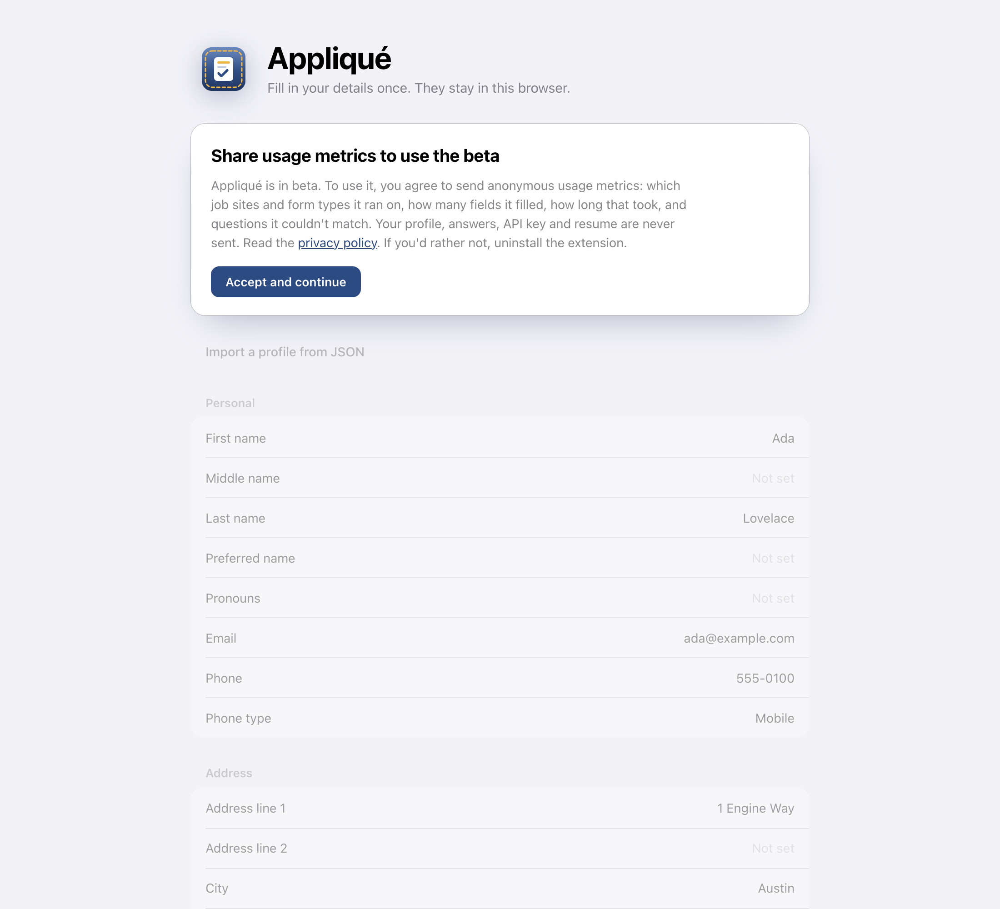
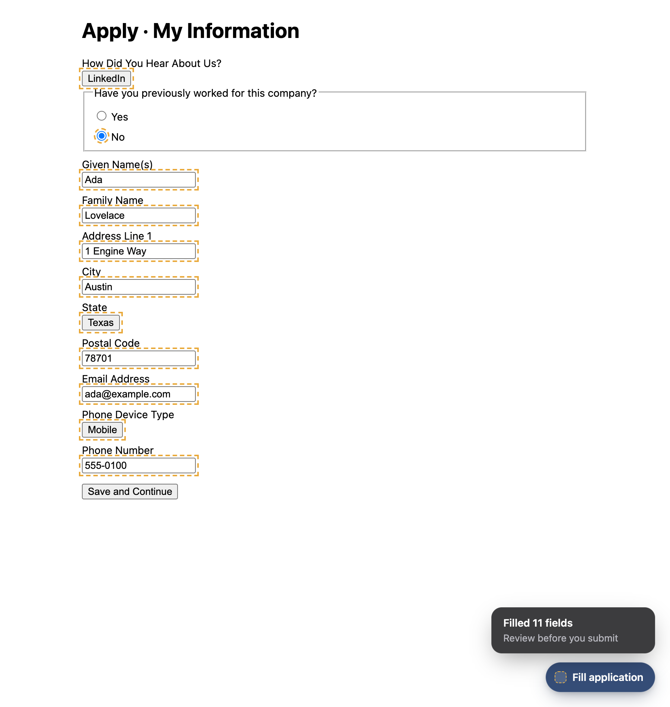
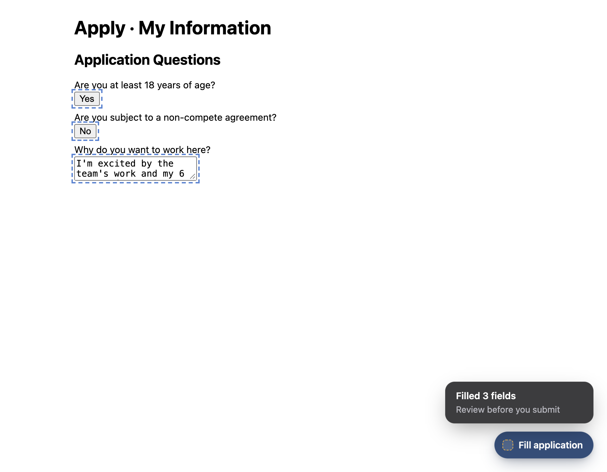

A Chrome extension that fills job applications (Workday, Greenhouse, Lever, Ashby and React, Angular and Ext JS forms) from a profile kept only in your own browser. It never submits anything. Source: github.com/sree-code/job-autofill
Documents/job-autofill-setup) and open Claude Code in it, using the desktop app or by running claude in a terminal there.Set up Appliqué for me by following this guide exactly. Stop and wait for me at every step marked "YOU".
| Item | Why | Where to get it |
|---|---|---|
| Google Chrome | The extension runs here | google.com/chrome |
| Node.js 20 or newer (LTS) | Builds the extension | nodejs.org: download the LTS installer and run it |
| Git | Downloads the code | git-scm.com (on a Mac it may already be installed) |
| Claude Code | Follows this guide for you | claude.com/claude-code |
| Your resume (PDF or DOCX) | Uploaded to applications, and used to draft your profile | Your own file |
| A DeepSeek API key (optional) | Writes answers to custom questions like “Why do you want to work here?” | platform.deepseek.com/api_keys: sign in, click Create new API key, copy it somewhere safe. An Anthropic key also works. |
Without an API key, everything except AI answers still works. You can add a key later.
| # | Step | Who |
|---|---|---|
| 1 | Check tools | CLAUDE |
| 2 | Download, build and test the extension | CLAUDE |
| 3 | Load the extension into Chrome | YOU |
| 4 | Accept the beta usage metrics | YOU |
| 5 | Draft your profile from your resume | CLAUDE drafts it, YOU check it |
| 6 | Import the profile, add your resume and API key, Save | YOU |
| 7 | Practice on a real job form (don't submit) | YOU with CLAUDE's help |
Run node -v (it must print v20 or higher), npm -v and git --version. If one fails, tell the user which item from the table to install, wait, then check again.
In the current folder, run these one at a time (on Windows PowerShell too):
git clone https://github.com/sree-code/job-autofill cd job-autofill npm install npm run build npm test
Every test must pass (the last lines show # fail 0). If any fail, show the user the output and stop. When it passes, tell the user the full path of the job-autofill folder. They need it in step 3.
chrome://extensions in the address bar and press Enter.job-autofill folder Claude told you about. It's the one that contains manifest.json.The extension's profile page opens by itself. If it doesn't, click the pinned icon, then Edit profile. Tell Claude when you see it.
At the top of the profile page is a box titled Beta: usage metrics are required. Read it, then click Accept and continue. The rest of the page stays greyed out until you do.

Ask the user for their resume file (and a profile export from another autofill tool, if they have one). Read it and write a JSON object with exactly these keys. Use "" for anything you can't find. Never guess.
{"firstName":"","middleName":"","lastName":"","preferredName":"","pronouns":"",
"email":"","phone":"","phoneDeviceType":"Mobile",
"address1":"","address2":"","city":"","state":"","postalCode":"","country":"","location":"City, ST",
"linkedin":"","github":"","portfolio":"",
"currentCompany":"","currentTitle":"","yearsExperience":"","salary":"","startDate":"","howHeard":"",
"school":"","degree":"","major":"","gradYear":"",
"workAuthorized":"Yes/No","needsSponsorship":"Yes/No","willingToRelocate":"Yes/No","previouslyEmployed":"",
"summary":"2-4 sentences","skills":"comma-separated",
"workHistory":"one line per job: Title, Company, Location, Start–End: key achievements",
"gender":"","race":"","hispanic":"","veteran":"","disability":""}
Ask the user for the answers you can't get from the resume: work authorization, sponsorship, relocation, salary, start date. Fill the last five (self-identification) only if the user gives you their answers. Show the finished JSON and ask the user to correct anything wrong. Dates and titles must match the resume they'll upload. Then save it as my-profile.json in the setup folder, outside job-autofill so it's never committed.
On the extension's profile page:
The line under the AI buttons now shows AI deepseek/…. Without a key it says “add an API key to enable”.
[job-autofill] report. Copy it to Claude, which uses it to suggest profile fixes for skipped fields.Workday: each company needs its own Workday account. Create it and sign in yourself, then start the application. Each page (My Information, Experience, Questions, Disclosures) fills as it appears. Workday support is still being tested on live sites, so check every page carefully.


| To… | Do this |
|---|---|
| Fill a page | It fills automatically when a form appears. Or click Fill application (bottom right), the toolbar icon, or press Alt+Shift+F. |
| Change your details | Toolbar icon → Edit profile → change → Save |
| Stop automatic filling | Profile page → “Auto-fill when a form appears” → Off → Save |
| Start a fresh AI session | Profile page → New AI session (keep memory), or Clear AI memory to forget past answers |
| Get the latest version | Ask Claude to “update Appliqué”, or in the job-autofill folder run git pull, npm install and npm run build. Then click the reload icon on Appliqué at chrome://extensions. |
Your profile, resume and API key stay in Chrome on your computer (chrome.storage.local). AI questions go only to the provider you chose, using your own key.
The beta can't be used without anonymous usage metrics. Nothing is sent until you click Accept and continue. To stop metrics, remove the extension at chrome://extensions. Privacy policy: job-autofill-telemetry.vercel.app/privacy
| Sent after you accept | Never sent |
|---|---|
| A random install ID; extension and browser version; the job site's name (no page path); detected framework and job-site type; number of fields found and filled; field types filled (e.g. “email”); question labels it couldn't match (emails and numbers masked); fill and AI timings; AI provider/model; error messages | Your profile values, anything typed into forms, AI answers, API keys, resume or cover letter, full page addresses, browsing history. IP addresses aren't stored. |
| Problem | Fix |
|---|---|
| Message: “accept usage metrics on the profile page to start” | Open the profile page and click Accept and continue (step 4). |
| Popup says “No form script on this page” | Reload the job page. Tabs opened before installing don't have the extension yet. |
| Nothing fills and no Fill application button | The page may not look like an application yet. Click Apply first, or press Alt+Shift+F. |
| Dropdowns not filled on Greenhouse | Keep the tab in front while it fills. Some dropdowns only open in the visible tab. |
| Custom questions left blank | No API key saved, or the AI wasn't sure. Add a key in step 6, or answer by hand. |
DeepSeek HTTP 401 in the console report | Wrong or deleted key. Create a new one at platform.deepseek.com/api_keys and paste it again. |
DeepSeek HTTP 402 in the console report | Your DeepSeek balance has run out. Add funds on the platform's Top up page. |
| A field fills, then clears | It's a search box that wants you to pick from its list. Pick it by hand. This is reported so it can be fixed. |
npm test fails after an update | Run npm install, then npm run build, then npm test again. |
| Anything else | Tell your Claude session what you see, and paste the [job-autofill] report line from the console. |